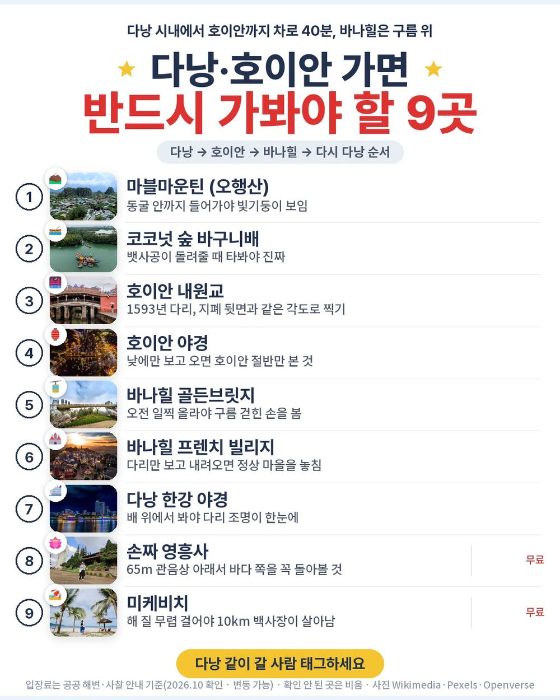
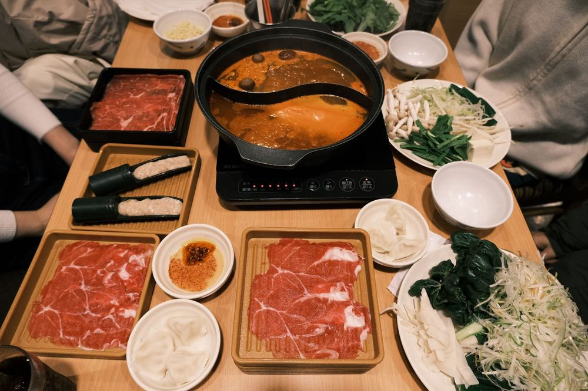
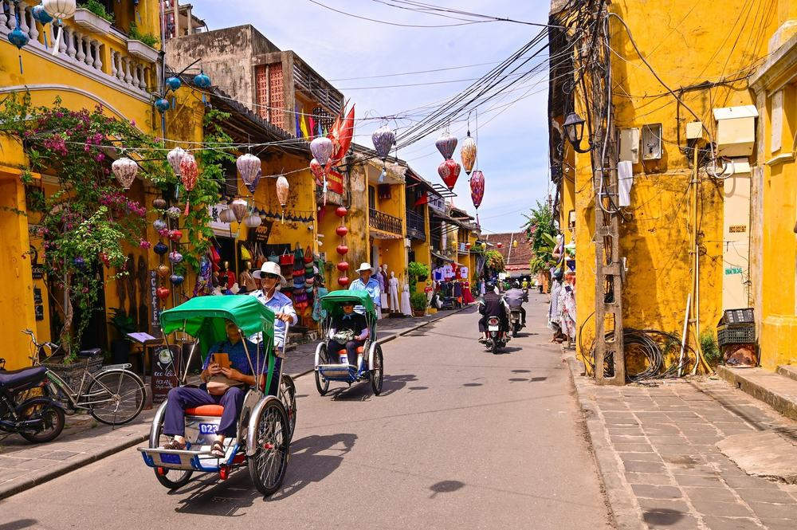
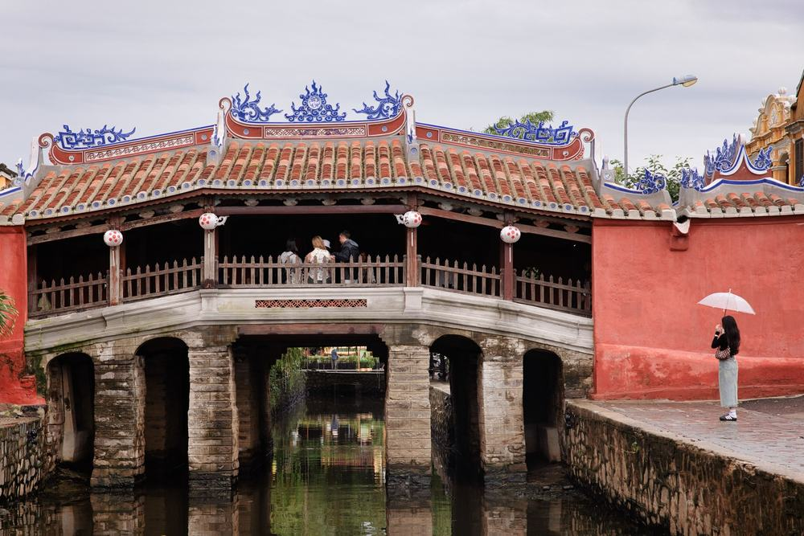
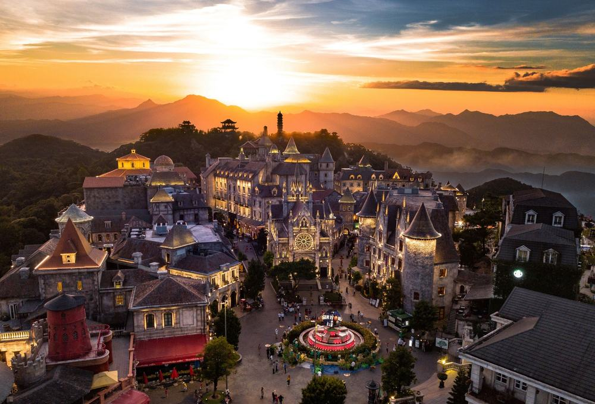
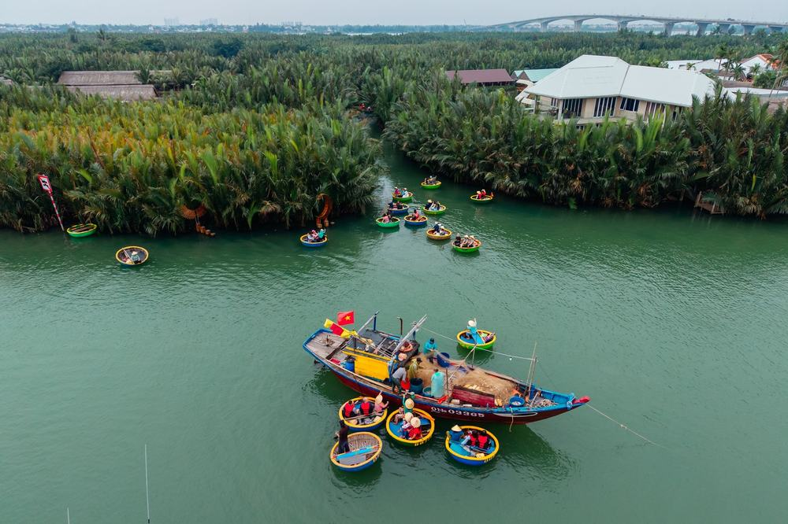

노랑풍선 다낭 패키지 여행 62만 9천원, 바나힐에 호이안 야경까지 추가금 진짜 없을까?

부모님 모시고 가까운 동남아를 찾다 보면 다낭이 제일 먼저 걸림. 그런데 다낭 패키지는 값이 싸 보여도 바나힐·호이안 야경·마사지가 현지 선택관광으로 따로 붙는 경우가 많음.
그러다 노랑풍선 상품이 걸림. 상품명부터 "NO옵션 NO팁 · 34만원 상당 옵션 포함"이라고 적혀 있음. 기사·가이드 경비가 이미 들어 있고, 핫스톤 마사지 90분, 차밍쇼, 한강 유람선, 호이안 야경투어까지 사전 포함임.
결론 — 추천. 인천 직항에 다낭·호이안·바나힐을 3박 5일에 다 돌고, 팁·선택관광 걱정이 없음. 다만 왕복 밤 비행기가 힘든 분, 쇼핑 2회가 싫은 분, 호텔 이름을 미리 알아야 마음이 놓이는 분은 아님.
62만 9천원이 그만한 값인지, 현지에서 더 내는 돈은 얼마인지 원문을 뜯어봤음.
| 항목 | 내용 |
|---|---|
| 가격 | 1인 629,900원 (2인 1실 기준 · 10월 말 출발) |
| 여행사 | 노랑풍선 |
| 항공 | 트리니티항공 직항 · 인천 밤 출발 → 다낭 자정 넘어 도착 / 귀국은 밤 출발 → 인천 아침 도착 |
| 숙소 | 5성급 예정 3박 · 한 호텔에서 세 밤 · 일반 객실뷰 |
| 일정 | 3박 5일 · 전용 버스 · 한국어 가이드 · 식사 10회 · 노팁 · 노옵션 |
| 가는 곳 | 마블마운틴 · 호이안 구시가지 · 바구니배 · 호이안 야경 · 바나힐 · 한강 유람선 · 영흥사 · 대성당 · 미케비치 |
▶ 내 출발일 오늘 기준 요금 확인 (제휴 링크 · 예약 시 수수료를 받으며 가격은 같습니다)
| 순서 | 다루는 것 | 한 줄 결론 |
|---|---|---|
| 1 | 구성 뜯어보기 | 노팁·노옵션, 현지 추가금은 매너팁 7달러 안팎 |
| 2 | 일정 살펴보기 | 2일차가 마블마운틴·호이안 낮과 밤으로 가장 꽉 참 |
| 3 | 자유여행 VS 패키지 | 직접 짜면 92만원 | 패키지가 팁 더해도 28만원쯤 덜 듦 |
1. 구성 뜯어보기
요약 — 항공·5성급 예정 3박·식사 10회(특식 6)·입장료·기사·가이드 경비·마사지 90분·차밍쇼·한강 유람선·호이안 야경투어·바구니배·버기카·보험이 다 들어 있음. 현지에서 더 내는 건 매너팁 정도이고, 쇼핑은 2회.
1-1. 62만 9천원에 들어 있는 것

포함 항목을 원문에서 그대로 옮기면 이럼.
- 왕복 항공권 + 유류할증료 + 세금
- 5성급 예정 호텔 3박 (2인 1실)
- 식사 10회 (호텔 조식 3 · 특식 6)
- 관광지 입장료 · 바나힐 왕복 케이블카
- 기사·가이드 경비 (사전 포함)
체험·공연 쪽은 이럼.
- 핫스톤 마사지 90분 · 차밍쇼 · 한강 유람선
- 호이안 바구니배 · 버기카 · 야경투어(씨클로)
- 마블마운틴 편도 엘리베이터 · 망고 도시락 · 열대 과일 시식
- 여행자보험
이 상품의 차별점은 현지에서 따로 고를 게 없다는 것임. 원문이 적어 둔 상당가로 보면 마사지 30달러, 차밍쇼 40달러, 바구니배 40달러, 한강 유람선 30달러 같은 것들이 전부 미리 들어 있음.
출발일별 요금 확인하기
https://naver.me/GSQyF7NS
1-2. 특식 여섯 번, 자유식은 없음

식사 10회 중 특식이 6번임. 샤브샤브, 호이안 리조트 안 알라만다 레스토랑(반쎄오·화이트로즈 같은 현지 요리), 바나힐 퓨전 뷔페, 소불고기 전골, 한정식 돌솥밥, 마지막 밤 목식당 씨푸드.
점심·저녁에 자유식이 한 번도 없음. 현지에서 밥값이 따로 안 나간다는 뜻임.
1-3. 호텔과 쇼핑

호텔은 5성급 예정임. 멜리아 빈펄 리버프론트, 프린스, 윈덤 솔레일, 래디슨, 포포인츠 같은 곳 중 하나가 출발 하루 이틀 전에 정해짐. 세 밤을 한 호텔에서 자서 짐은 한 번만 풀면 됨. 방은 바다 쪽이 아닌 일반 객실뷰, 트윈·더블은 고를 수 없음.
쇼핑은 2회 — 커피·잡화, 노니·침향. 각 1시간쯤이고 사는 건 자유, 환불 규정도 있음.
1-4. 현장에서 더 낼 돈
| 항목 | 금액 | 비고 |
|---|---|---|
| 기사·가이드 경비 | 0원 | 상품가에 포함 |
| 선택관광 | 0원 | 마사지·차밍쇼·유람선·야경투어 포함 |
| 식사 | 0원 | 점심·저녁 자유식 없음 |
| 매너팁 | 약 20,000원 | 마사지 1인 3달러 + 바구니배·씨클로 관례 2~4달러 × 2 |
| 싱글룸 쓰면 | 220,000원 | 1인 여행 시 |
| 합계 (2인) | 약 20,000원 | 상품가 125만 9,800원 + 2만원 = 약 128만원 |
한 사람으로 치면 약 64만원임. 환율은 1달러 약 1,400원으로 잡았음.
1절 자주 나오는 질문
Q. 선택관광을 현지에서 권하나요?
A. 원문이 "NO옵션"으로 적힌 상품이고, 마사지·차밍쇼·한강 유람선·호이안 야경투어가 이미 들어 있음.
Q. 가이드 경비는 따로 내나요?
A. 안 냄. 기사·가이드 경비가 상품가에 포함임. 마사지·바구니배·씨클로 매너팁과 개인경비만 별도.
Q. 바다가 보이는 방인가요?
A. 아님. 원문에 "모든 호텔은 일반 객실뷰"로 적혀 있음. 대신 세 밤을 한 호텔에서 묵음.
2. 일정 살펴보기
요약 — 1일차 밤 비행기, 2일차 마사지·마블마운틴·호이안 낮과 밤, 3일차 오전 호텔 자유시간 뒤 바나힐·차밍쇼·한강 유람선, 4일차 쇼핑·영흥사·대성당·미케비치 뒤 밤 비행기, 5일차 아침 인천 도착.
2-1. 하루하루 어디를 가나

| 일차 | 가는 곳 | 식사 | 숙소 |
|---|---|---|---|
| DAY 1 | 인천 21:35 출발 → 다낭 00:25 도착 → 호텔 | — | 다낭 |
| DAY 2 | 핫스톤 마사지 90분 → 샤브샤브 → 마블마운틴(엘리베이터) → 바구니배 → 버기카 → 호이안 구시가지(내원교·풍흥의 집·광조회관) → 야경투어(씨클로) → 다낭 복귀 40분 | 조 호텔식 · 중 한식 · 석 현지식 | 다낭 |
| DAY 3 | 오전 호텔 자유시간 → 퓨전 뷔페 → 바나힐 케이블카·골든브릿지·프렌치 빌리지 → 차밍쇼 → 소불고기 전골 → 한강 유람선 | 조 호텔식 · 중 현지식 · 석 한식 | 다낭 |
| DAY 4 | 체크아웃 → 쇼핑 2회 → 돌솥밥 → 영흥사 → 다낭 대성당 → 열대 과일 → 목식당 씨푸드 → 미케비치 → 공항 23:35 출발 | 조 호텔식 · 중 한식 · 석 현지식 | 기내 |
| DAY 5 | 인천 06:05 도착 | — | — |
| 일차 | 버스 이동 | 걷기 | 포함 식사 |
|---|---|---|---|
| DAY 1 | 약 0.5시간 | 적음 | 조 현지식 |
| DAY 2 | 약 2시간 | 중상 | 조 호텔식 · 중 한식 · 석 현지식 |
| DAY 3 | 약 1.5시간 | 보통 | 조 호텔식 · 중 현지식 · 석 한식 |
| DAY 4 | 약 1.5시간 | 보통 | 조 호텔식 · 중 한식 · 석 현지식 |
| DAY 5 | 거의 없음 | 적음 | 포함 끼니 없음 |
| 합계 | 약 5.5시간 | - | 10끼 (현지식 4 · 호텔식 3 · 한식 3) |
요약 — 버스 이동은 5일 동안 약 5.5시간, 포함 식사는 10끼(현지식 4 · 호텔식 3 · 한식 3)임. 가장 많이 걷는 날은 DAY 2임.
2-2. 2일차 — 대리석 산에서 호이안의 밤까지

아침엔 핫스톤 마사지 90분으로 밤 비행기 피로부터 풂. 점심은 샤브샤브, 그다음 산 전체가 대리석인 마블마운틴. 최고봉 투이썬이 108m인데 편도 엘리베이터가 포함이라 오르막이 덜함.
오후엔 호이안. 코코넛 숲 물길에서 바구니배를 타고, 버기카로 구시가지에 들어가 내원교·풍흥의 집·광조회관을 걸어서 봄. 해가 지면 씨클로로 등불 거리를 돌고, 소원을 담은 등불을 강물에 띄움.
2-3. 3일차 — 오전엔 쉬고, 오후엔 구름 위로

오전 11시까지 호텔 자유시간임. 밤 비행기로 온 일정이라 이 반나절이 꽤 큼. 점심 퓨전 뷔페 뒤 바나힐 케이블카로 정상에 올라 골든브릿지, 프렌치 빌리지, 꽃 정원을 봄. 내려와서 차밍쇼(또는 아오자이쇼), 저녁 소불고기 전골, 밤엔 한강 유람선.
2-4. 4일차 — 시내 한 바퀴, 그리고 밤 비행기

오전에 쇼핑 2곳, 점심 돌솥밥. 오후엔 영흥사의 65m 해수관음상, 1923년 지은 분홍빛 다낭 대성당(첨탑의 닭 모양 풍향계 때문에 수탉 성당이라고도 부름). 저녁은 목식당 씨푸드, 그다음 약 10km 백사장 미케비치를 걷고 공항으로 감.
베트남은 전자담배를 쓰는 것도 갖고 들어가는 것도 금지임. 액상형·가열형 전부 해당돼서 짐 쌀 때 미리 빼야 함.
2절 자주 나오는 질문
Q. 많이 걷나요?
A. 2일차 호이안 구시가지 도보가 가장 김. 대신 버기카·씨클로로 나눠 움직이고, 마블마운틴은 엘리베이터가 포함임.
Q. 비행기는 몇 시인가요?
A. 트리니티항공 직항이고, 인천 21:35 출발 → 다낭 00:25 도착, 귀국은 다낭 23:35 출발 → 인천 06:05 도착임(원문 기준). 부치는 짐은 15kg이고 기내식은 없음.
Q. 입국할 때 준비할 게 있나요?
A. 다낭은 전자입국신고가 필수임. 입국 전 72시간 안에 온라인으로 등록하고, 이메일로 받은 QR코드를 캡처해 두면 됨.
3. 자유여행 VS 패키지 | 직접 짜면 92만원
요약 — 같은 일정을 직접 짜면 1인 92만원쯤 듦. 패키지는 매너팁을 더해도 약 64만원이라 28만원쯤 덜 들고, 호이안·바나힐 이동과 공연·유람선 예약까지 맡기는 셈임.
3-1. 같은 일정을 직접 짜면

같은 일정을 혼자 짠다고 치고 항목별로 계산해 봄. 10월 말 출발, 2인 1실 1인분임. 항공 말고는 추정치라 근거 열에 적어 둠.
| 항목 | 금액 | 근거 |
|---|---|---|
| 인천–다낭 왕복 항공 | 393,000원 | 직항 두 달 운임 하위 25% 값 (2026-10-06 마이리얼트립 조회) |
| 5성급 호텔 3박 | 150,000원 | 2인 1실 1박 약 10만원의 1인분 × 3 (추정) |
| 식사 10회 | 110,000원 | 특식 6·호텔 조식 3·과일 (추정) |
| 공항·호이안·바나힐 차량 | 70,000원 | 공항 왕복 + 호이안 왕복 + 바나힐 왕복, 2인 나눔 (추정) |
| 바나힐 입장권 (케이블카 포함) | 52,000원 | 현지 판매가 기준 (추정) |
| 마사지 90분 | 35,000원 | 핫스톤 1회 (추정) |
| 바구니배·버기카·씨클로·야경 | 40,000원 | 호이안 체험 묶음 (추정) |
| 차밍쇼·한강 유람선 | 45,000원 | 공연 + 유람선 (추정) |
| 마블마운틴 입장·엘리베이터 | 5,000원 | (추정) |
| 여행자보험 · 유심 | 25,000원 | 5일 기준 |
| 가이드 | — | 자유여행은 없음 |
| 합계 | 약 925,000원 |
직접 짜실 분은 이 날짜 항공권부터 보세요 — https://myrealt.rip/uFLU58 (마이리얼트립 제휴 링크)
패키지는 629,900원에 매너팁 7달러(약 1만원)를 더해 약 64만원임.
3-2. 그래서 뭐가 다른가
항공권 하나가 이미 39만원을 넘어서, 나머지를 다 더하면 패키지 쪽으로 기움. 게다가 다낭 시내·호이안·바나힐이 서로 떨어져 있어 매번 차를 따로 잡아야 함.
- 다낭 → 호이안 → 다낭, 바나힐 왕복 차량을 각각 예약
- 마사지·바구니배·씨클로·공연·유람선을 각각 따로 결제
- 밤 0시 넘어 도착하는 공항 픽업도 직접 잡아야 함
패키지는 이 전부가 전용 버스 한 대로 붙고, 한국어 가이드가 붙음. 자유여행 계산표에 가이드 행이 비어 있는 게 그 뜻임 — 0원이 아니라 살 수 없는 것임.
3-3. 어느 쪽이 맞나
| 자유여행이 맞음 | 패키지가 맞음 |
|---|---|
| 미케비치 근처에서 쉬는 게 목적임 | 다낭·호이안·바나힐을 한 번에 볼 것임 |
| 그랩·현지 투어 예약이 편함 | 이동·예약을 맡기고 싶음 |
| 비행기 시간을 낮으로 고르고 싶음 | 밤 비행기도 괜찮음 |
| 쇼핑 일정이 싫음 | 쇼핑 2회는 괜찮음 |
3절 자주 나오는 질문
Q. 자유여행이 더 싸지 않나요?
A. 계산해 보면 자유여행이 약 92만원, 패키지가 팁 포함 약 64만원임. 항공권만 39만원이 넘고, 공연·유람선·바나힐을 따로 사면 이번엔 패키지가 덜 듦.
Q. 혼자 가도 되나요?
A. 됨. 다만 싱글룸 사용료 22만원이 붙음.
Q. 비자가 필요한가요?
A. 한국 여권은 관광 45일 무비자임. 여권 유효기간은 출발일 기준 6개월 이상 남아 있어야 함.
마무리
정리하면 이럼.
추천함. 62만 9천원에 인천 직항, 5성급 예정 호텔 3박, 식사 10회(특식 6), 바나힐 골든브릿지, 호이안 낮과 밤, 바구니배, 마사지 90분, 차밍쇼와 한강 유람선이 들어 있음. 기사·가이드 경비도 이미 냈고, 현지에서 더 내는 건 매너팁 정도임.
이런 분은 고르면 안 됨. 왕복 밤 비행기가 힘든 분, 쇼핑 2회가 싫은 분, 호텔 이름을 미리 알아야 마음이 놓이는 분.
걸리는 점이 있긴 한데 상품 흠이라기보다 맞는 사람과 안 맞는 사람을 가르는 조건에 가까움.
오늘 기준 출발일별 요금 보기
https://naver.me/GSQyF7NS
함께 보면 좋은 글
참좋은여행 나트랑 달랏 패키지 여행 52만 9천원, 추가금 진짜 없을까?
https://blog.naver.com/robotnady10/224431609302
노랑풍선 시드니 패키지 여행 239만 9천원, 오페라하우스 안까지 될까?
https://blog.naver.com/robotnady10/224430833681
이 글에는 네이버·마이리얼트립 제휴 링크가 포함되어 있으며, 링크를 통해 예약하시면 일정 수수료를 받습니다. 가격은 동일합니다. 가격과 구성은 2026년 10월 6일 확인 기준이며 출발일에 따라 달라질 수 있습니다.
▶ 이 상품, 영상으로 보기 (유튜브)
▶ 다낭 패키지 오늘 값 나란히 비교
사진 출처 (저작자 · 라이선스):
그 밖의 사진: Pexels
쇼츠·클립 영상과 사진:
🌉 Drone Tour at Cau Vang – The Breathtaking Golden — Dr. Jon's Desk (YouTube, CC BY) 원본
Hoi An's Glowing Tradition: Lanterns On The River — World Wide Timelapse (YouTube, CC BY) 원본
Marble Mountains, Da Nang — MrVJclub704 (YouTube, CC BY) 원본
Lady Buddha Linh Ứng Pagoda (Bãi Bụt) on Son Tra P — Jason Michael Phillips (YouTube, CC BY) 원본
Boats with lanterns on the Thu Bon river IMG 3864 — CC BY-SA 4.0 (Wikimedia Commons) 원본

Lucky temple Huyen Khong — CC BY 2.0 (Wikimedia Commons) 원본

MARBLE MOUNTAIN DA NANG: Bird's Eye View Drone Tou — Operation Da Nang (YouTube, CC BY) 원본